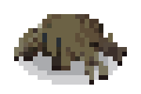
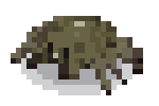
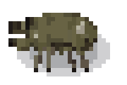
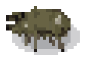

Thorn-spider
A creature of Grimbough Forest.
Thorn-spider is a creature of Grimbough Forest.
Locations
In the game
In the game the Thorn-Spider is level 38–39, normal. It is found in The Hearth-Huts. It can drop Bramble Leggings (2%), Soot-Pine Coat (2%) and rarely one of 8 rare items.
Quests
Quests that ask for it: Spiders in the Moss (behind the level cap), Spiders by the Ford (behind the level cap) and Spiders on the East Bank (behind the level cap).
Gallery







